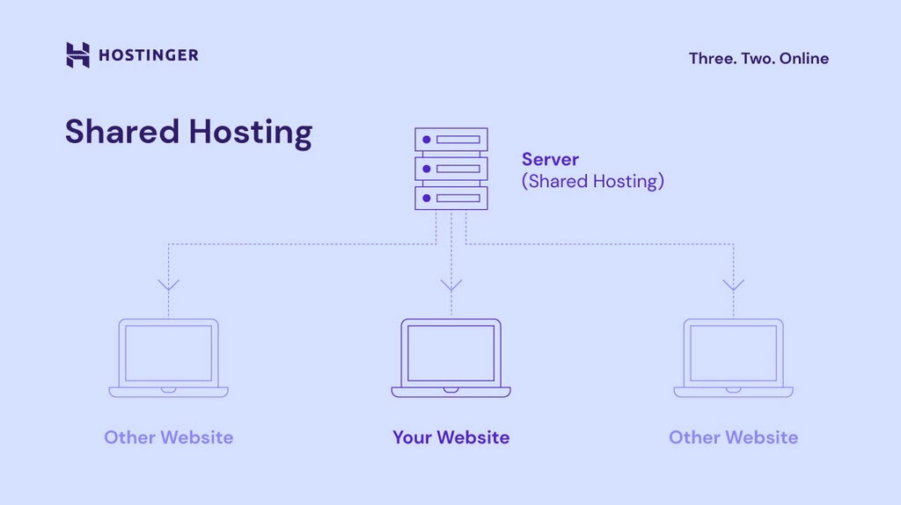
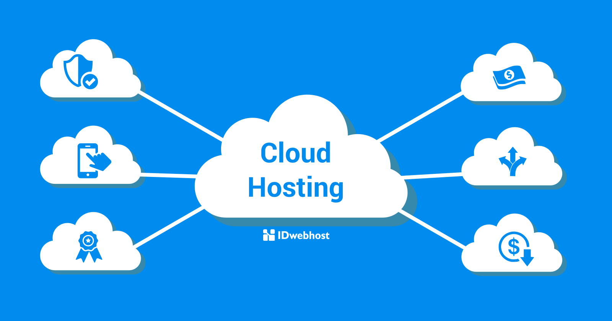
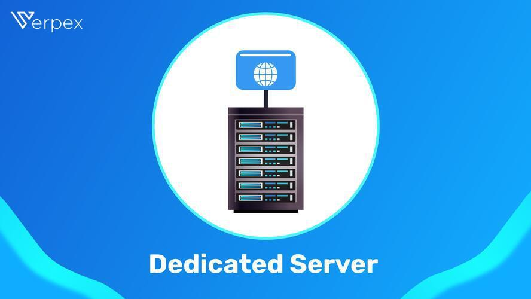
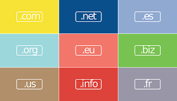
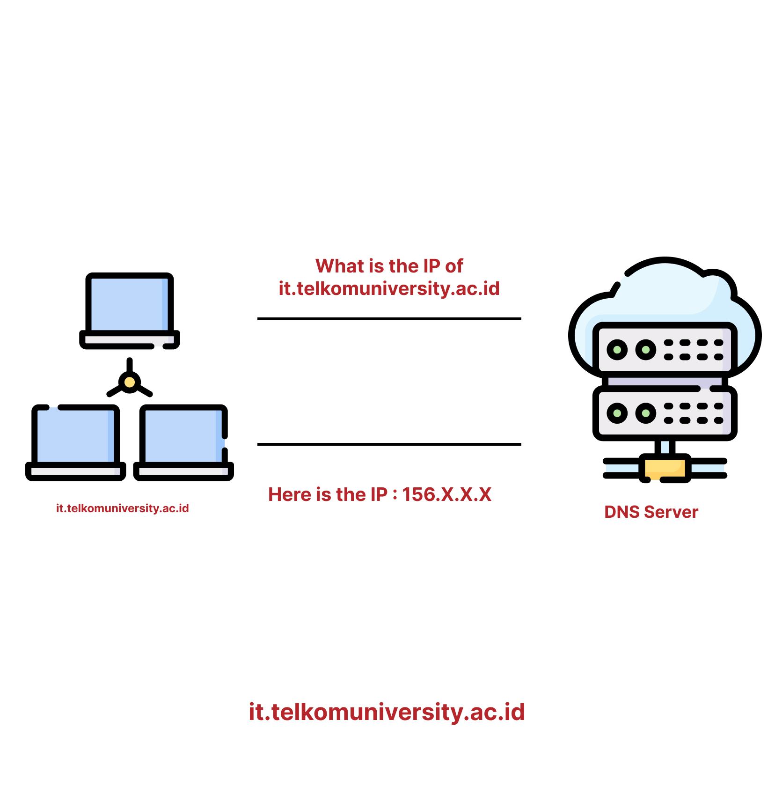
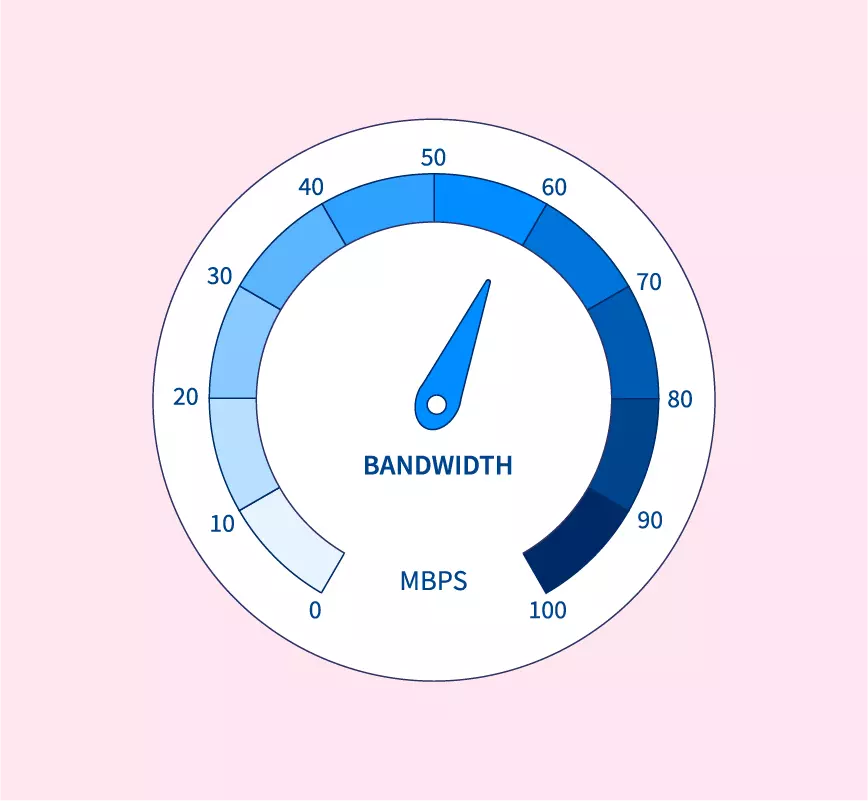

Pengantar Hosting
Hosting adalah layanan menyimpan data dan file web di server agar bisa diakses melalui internet. Beberapa jenis hosting populer:
- Shared Hosting
- VPS Hosting
- Cloud Hosting
- Dedicated Hosting
- Domain
- DNS
- Bandwidth
- Storage
- Tentukan kebutuhan (traffic, ukuran file, aplikasi yang dipakai).
- Pilih jenis hosting: Shared untuk pemula; VPS/Dedicated untuk kebutuhan lebih besar.
- Periksa uptime SLA, backup, support, dan lokasi server.
- Pastikan ada control panel yang familiar (cPanel/Plesk) bila Anda butuh antarmuka grafis.
Shared hosting adalah jenis layanan hosting web yang paling dasar dan terjangkau, di mana banyak situs web berbagi satu server fisik dan sumber dayanya seperti ruang disk, bandwidth, dan daya pemrosesan. Jenis hosting ini cocok untuk pemula, blog, atau bisnis kecil karena minimnya kebutuhan teknis (penyedia mengurus pemeliharaan server) dan harganya yang murah, meskipun memiliki batasan pada kinerja dan sumber daya yang tersedia.
VPS (Virtual Private Server) adalah sebuah server virtual yang memungkinkan satu server fisik dibagi menjadi beberapa lingkungan server virtual independen, di mana setiap server memiliki sistem operasi, sumber daya (CPU, RAM, penyimpanan), dan konfigurasi sendiri. Layanan ini menawarkan kinerja yang lebih stabil dan kontrol penuh atas server virtual, mirip dengan memiliki server fisik sendiri namun dengan biaya lebih rendah, serta memberikan isolasi dari pengguna lain yang menggunakan server fisik yang sama.

Cloud hosting adalah layanan penyediaan server virtual dan sumber daya komputasi dari jaringan server yang saling terhubung (cloud) untuk menghosting situs web dan aplikasi, yang menawarkan skalabilitas, fleksibilitas, dan keandalan karena kapasitas dapat ditingkatkan atau diturunkan sesuai kebutuhan, dan beban kerja didistribusikan ke beberapa server untuk meningkatkan kinerja dan mengurangi downtime.
Dedicated hosting adalah layanan di mana sebuah server fisik didedikasikan sepenuhnya untuk satu pengguna, memberikan kontrol penuh atas sumber daya, performa maksimal, dan keamanan yang lebih tinggi dibandingkan jenis hosting lain. Pengguna mendapatkan akses eksklusif ke seluruh resource server, seperti CPU dan RAM, tanpa harus berbagi dengan pengguna lain, sehingga cocok untuk website atau aplikasi dengan kebutuhan besar seperti e-commerce atau aplikasi keuangan.
Istilah Penting
Domain adalah nama atau alamat unik yang mudah diingat untuk mengidentifikasi lokasi suatu situs web atau layanan di internet, menggantikan alamat IP numerik yang sulit dihafal. Contohnya adalah "google.com" atau "wikipedia.org", yang lebih mudah bagi pengguna dibandingkan dengan serangkaian angka seperti "198.102.434.8". Domain berfungsi sebagai "nama" sebuah website agar mudah dikunjungi, terdiri dari nama domain utama dan ekstensi seperti ".com" atau ".id".
Secara sederhana, DNS adalah sistem yang menerjemahkan nama domain (seperti www.google.com) menjadi alamat IP (seperti 142.250.190.68) yang bisa dimengerti oleh komputer untuk menemukan server tujuan di internet..
Jumlah data yang bisa dikirimkan dari server ke pengunjung dalam periode tertentu.
Ruang disk untuk menyimpan file website, database, email.
Langkah Awal Memilih Hosting
Ringkas
Hosting adalah dasar agar website Anda bisa diakses. Memahami jenis hosting dan control panel membantu memilih layanan yang tepat dan mengelola situs secara efektif.